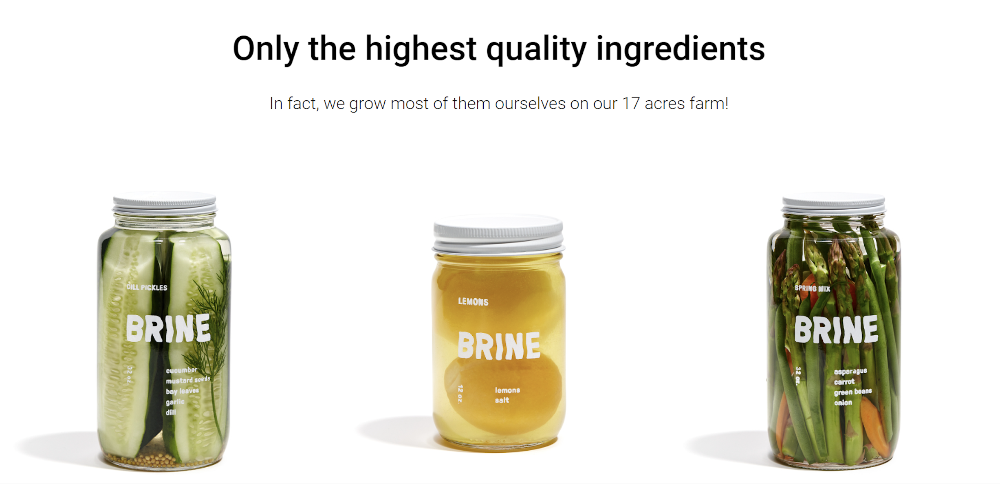
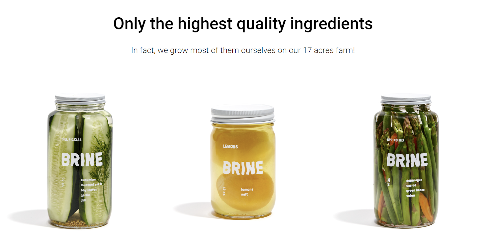
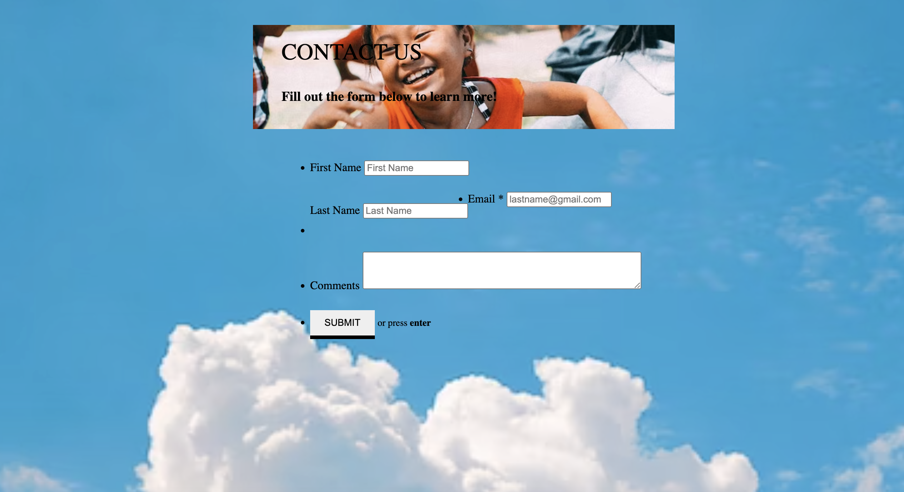
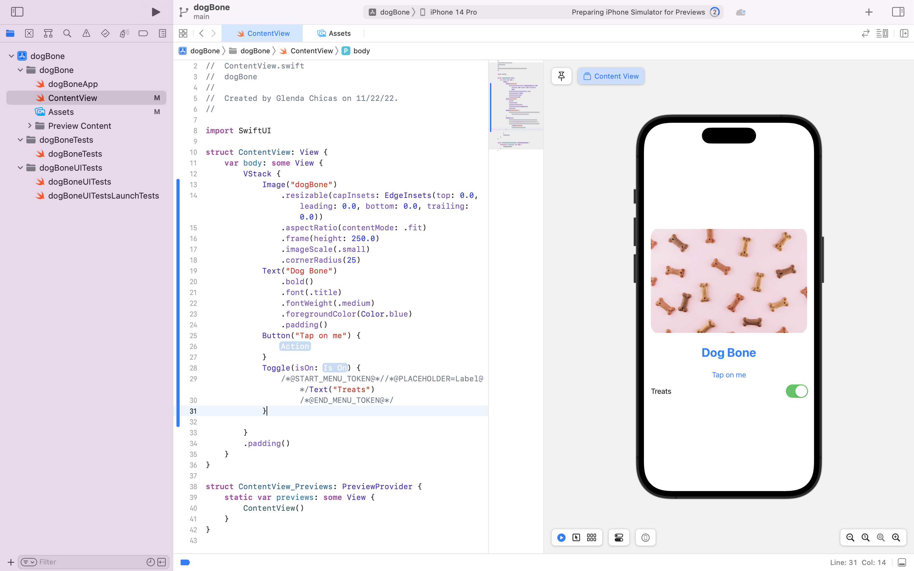
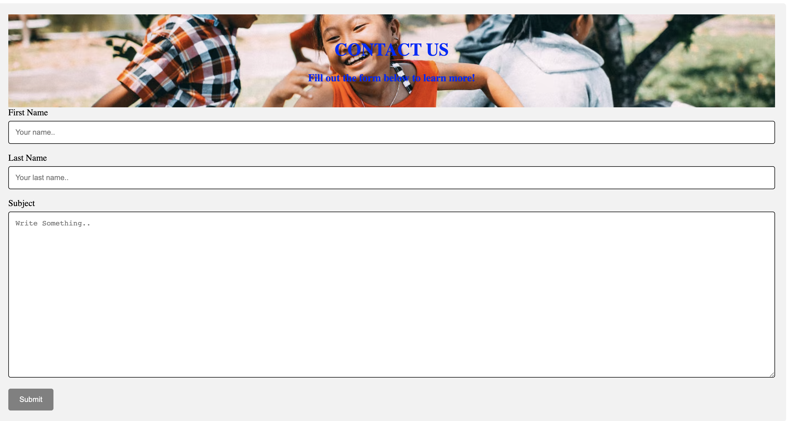
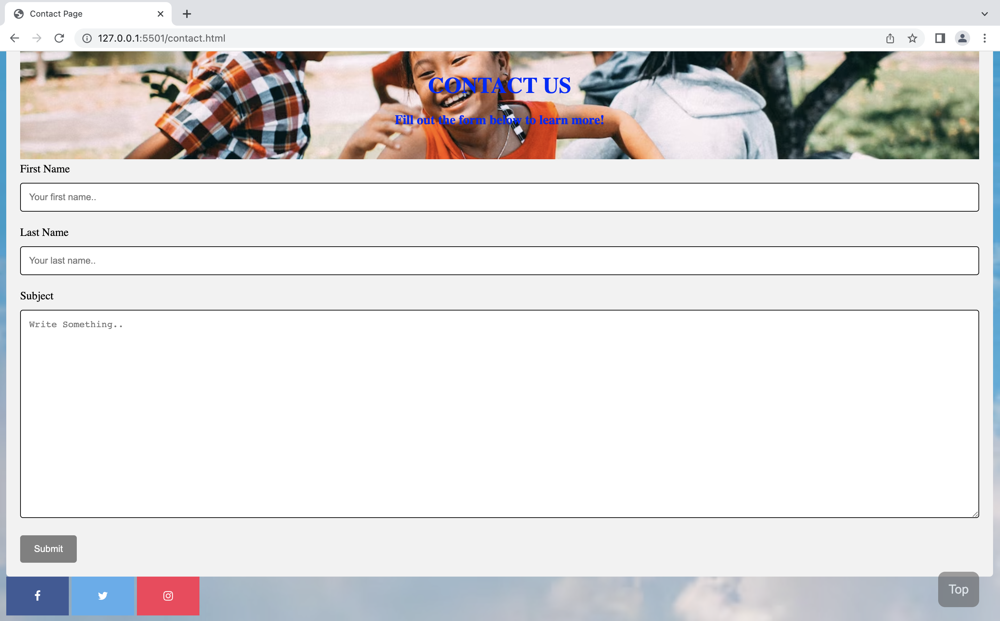
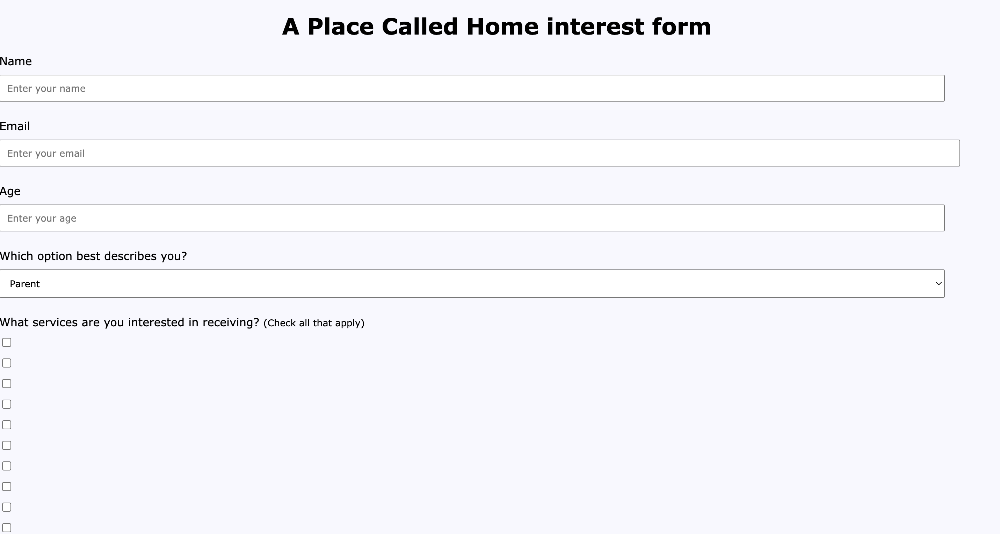
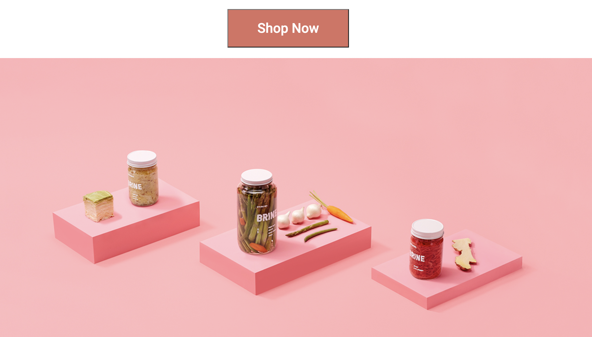

Today, I'm attempting to set up terminal on mac to Git Hub. I'm starting the one hundred days of code from day one. Yesterday I worked on the pickle project, I added styling to pictures and buttons. I will add a screenshot on what I worked on for pickle project below. Today, I plan on working on the contact page for capstone project. Here are some pictures from yesterday's work:
 

Today, I worked on setting up the contact page for capstone project. I plan to add a minimalist contact page and social media icons as part of the non profit website. I think that since there will be many pictures and videos on the webpage that having a contact page that is minimalist and straight forward will be a better for the user. I will try to create, see how it looks and make adjustments from there. Additionally, I've been experimenting with Xcode. It's a bit confusing to figure out at the moment, but I will watch videos and read articles to get a better understanding.
Today, I started documentation on Xcode. I opened the landmarks file for the workspace. I experiemented with the files. Addionally, I followed up with classmate about class today. Will meet with the group to go over project. Also, reviewed replit.
Today, I worked on contact page for capstone project. I added a picture to the heading of where contact us is placed. I might change the font and weight of font to make the words stand out more. I also added some styling to the containers and divs of contact page. This is what page looks like so far: 
Today, I worked on getting to know Xcode. I was able to play around with the workspace and see how different space changes. For example, the iphone app is different than the rest of the options. Additionally, I got a better understanding of media queries.
Today, I further experiemented with Xcode. I was able to adjust and add pictures to an app. I changed the font and color of the text. I adjusted the size of the picture and added a button with a toggle. I find that Xcode is easier to understand. I plan on continuing to learn more to add on to the app practice. This is the practice that I worked on today: 
Today, I worked on watching video for Xcode. I looked for video that were beginning friendly and that were updated for the latest version of Xcode. I plan on continuing to work on group project later on this week. I also want to make this journal look like a journal.
I'm pushing as part of 100 days of code. Taking a break from working on projects today for Thanksgiving.
Today, I worked on contact page for project. I started over because I went with a different idea. I added a submit button that changes color. I also styled the form. I want to adjust the color of the heading because it doesnt look like it flows. Here is a picture of what it looks like: 
Today, I worked on adding a navigation bar to the contact page for capstone project. I didn't think that I needed to add it, but adding the nav bar makes it more accessible. Additionally, I am struggling to merge branch to main branch of project.
Today, I didn't work on the captsone project because I woke up really sick. I thought about making adjustments to the contact form and adding to my pickle project. I will work on both projects tomorrow when I feel better.
Today, I figured out how to merge my changes onto the main branch. I worked on the capstone project - made changes to the footer and navigation bar.
Today, I continued to work on capstone project. I added social media icons to the bottom of the contact page - styled icons with square shape. 
Today, I challenged myself to try and create a captcha for the contact page and form page for the project. I am strugglin to get the letter to appear. I used a letter and number randomized, but it seems to not be working. I plan on making the captcha work by end of day.
Today, I continued to work on capstone project. I made attempts at adding form validation. I created two - one was more captcha but my code didnt seem to work so I plan on continuing to work on it. The second one I attempted to make was a number fill in but the issue I had was that once a number was inputed, nothing happened. I want to get it fixed so that there is form validation on the project. Here is an update of an interest form I made: 
Today, I met with my group to discuss project. I made adjustments to the sign up form. 1. I added a form validation/ human varification. 2. Changed the background color of the the sign up sheet. 3. Added program and services option as "check all that apply." I plan on finishing this project this week and start a new project new week.
Today, in class we presented our projects. We went over the different tools we used on the website. After reviewing my portion of the project, I want to make adjustments to the pages I worked on. I want to add more information to the contact page and the interest form.
Today, I watched video on how to add social media logos to footer. Also want to make the logos clickable.
Today, I worked on styling form and contact form for group project. Making last minute changes to the overall look of the pages. I want to make the forms smaller than the rest of the page. I also worked on styling this journal. I want lines in the backgroung so it looks like an actual journal.
Today, I didn't work too much on my projects. I had my wisdom tooth removed and have been resting.
Today, I added icons to the capstone project. I ran into the same problem with git again. I trid fixing but still tryint to figure out.
Today, I worked on fixing my project. I met with Colin and went over some git materials. I plan on continuing to work on the project but on a new file. I hope that this will alleviate the issues wit Git and Github.
Today, I worked on making changes to side porjects. Added styling to practice forms and form validation.
Today, the project was submitted. I'm brainstorming what project I should work on next.
Today, I worked on the pickle project. I added pink button and pink background. I'm having issues with centering the "Subscribe" on the button. Here is a progress picture: 
Today, I made some progress on the pickle project. I made adjustments to the pictures and buttons. I was able to figure out the issue I had yesterday. I plan on working on responsiveness tomorrow
Today, I worked on applications
Today, I further continued working on the pickle project. Attempted to adjust the footer to make the section bigger.